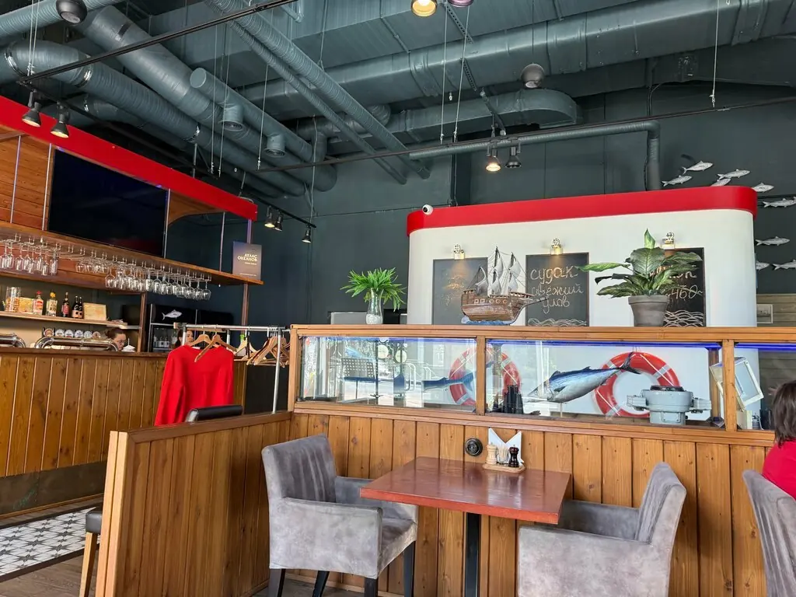
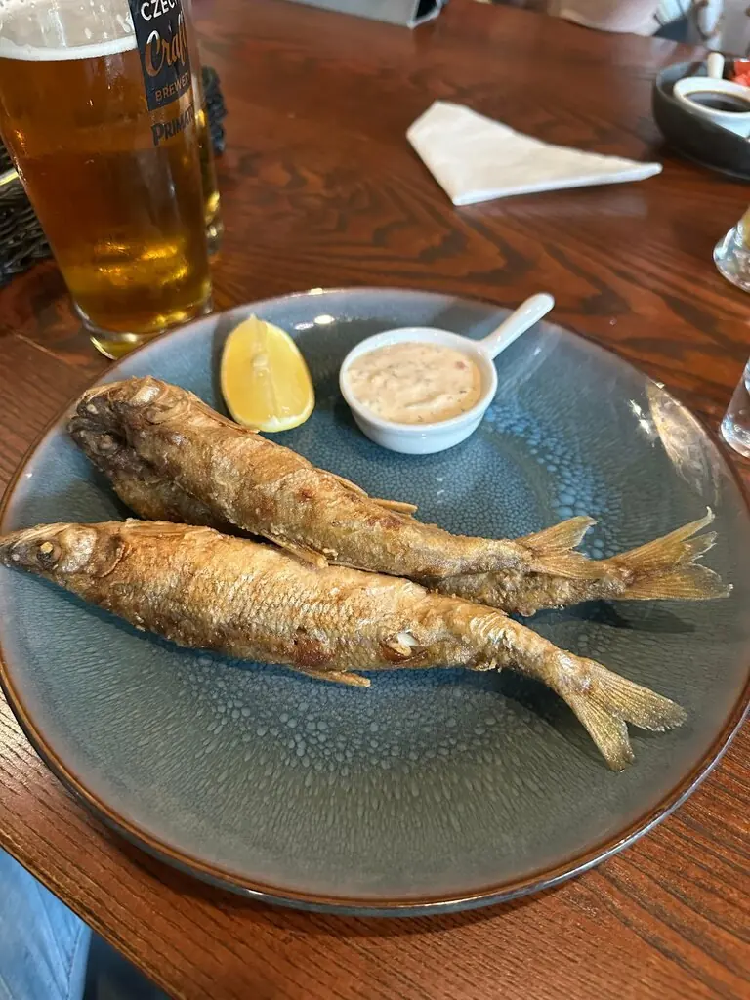
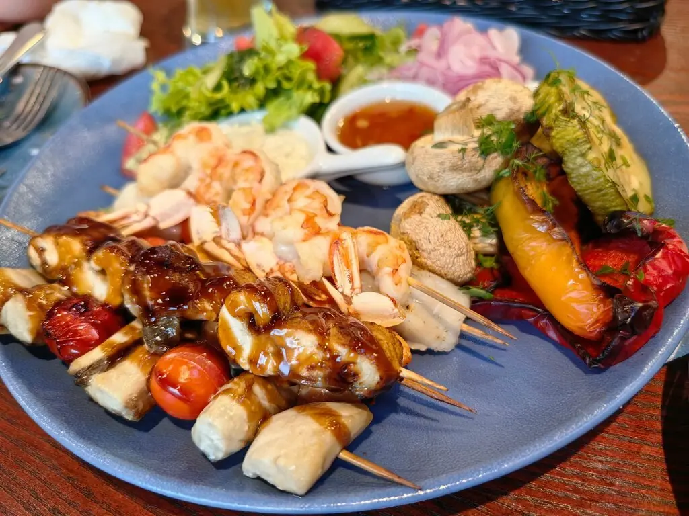
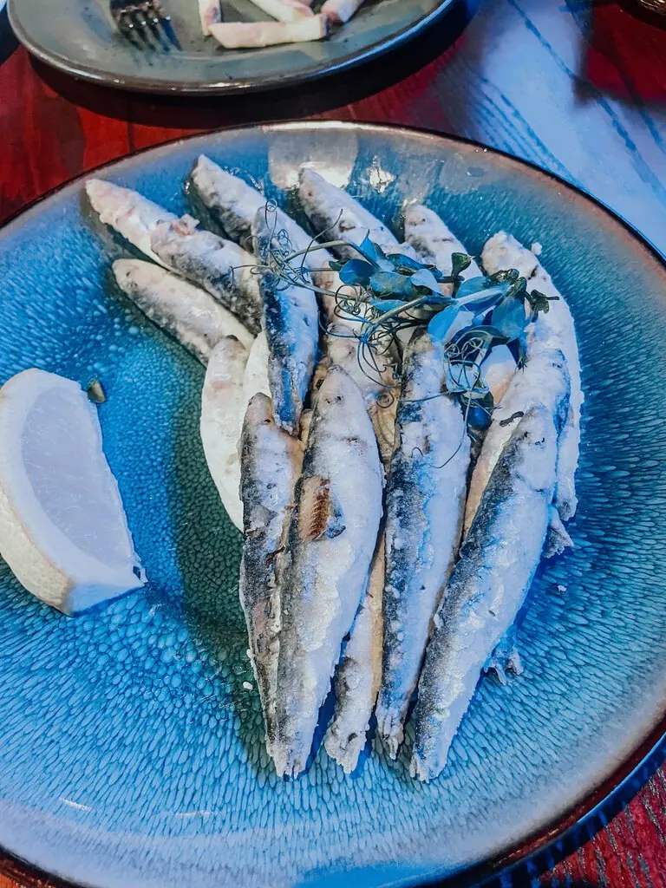
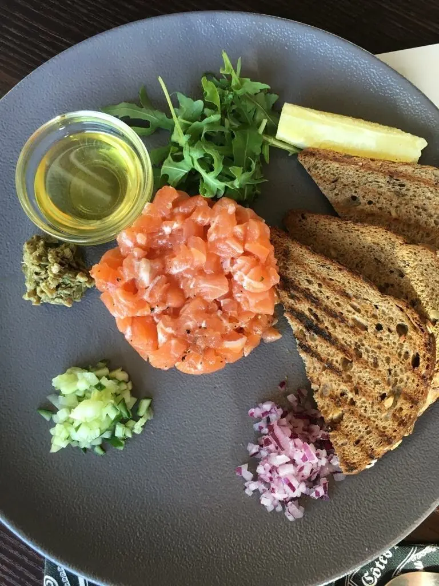
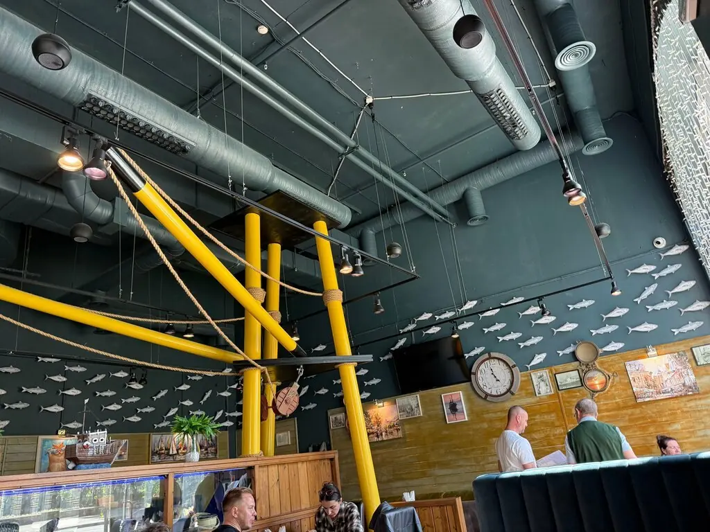

Калининград+7 906 237-72-25
Шпрот
Рыбный ресторан, где открывать банку не придётся. Балтийская килька, корюшка и уха уже на столе.
5,0 · 6180 оценок
Прокрутите вниз, чтобы открыть банку
Состав
Уха рыбацкая460 ₽
Солянка рыбная580 ₽
Килька балтийская во фритюре460 ₽
Корюшка во фритюре740 ₽
Хрустящие палочки из трески с картофелем510 ₽
Креветки в темпуре790 ₽
Бургер из говядины с картофелем фри680 ₽
Часть меню с Яндекс Карт, цены уточняйте у официанта.





Рыбный порт
Жёлтые балки, рыбы на потолке, зал на 50 мест. Можно прийти с собакой и с ноутбуком.
Говорят
Отличное место! Очень вкусная еда. Шашлычки из рыбы и морепродуктов офигенные! А килька в кляре как семечки!Ирина Гонус
Атмосфера рыбного порта, вкусная треска в панировке.Дарья С
Отличное место. Рыбка без горечи, а это значит свежая.Владислав Опанасенко